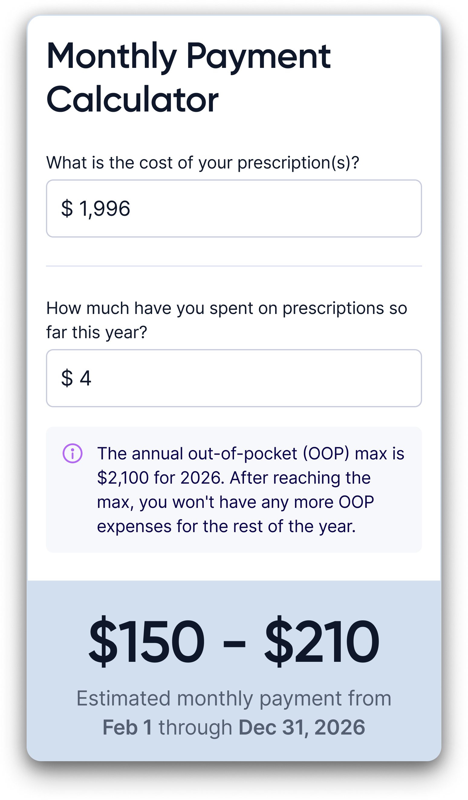
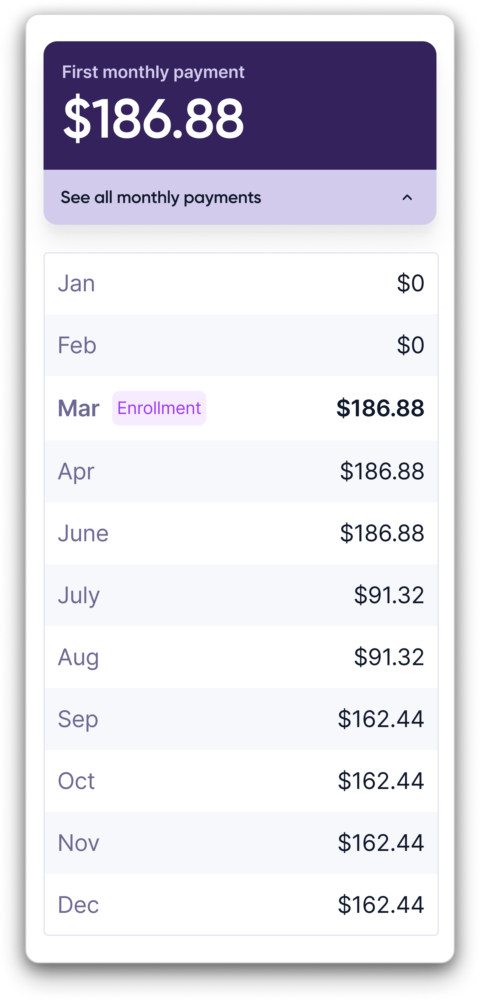
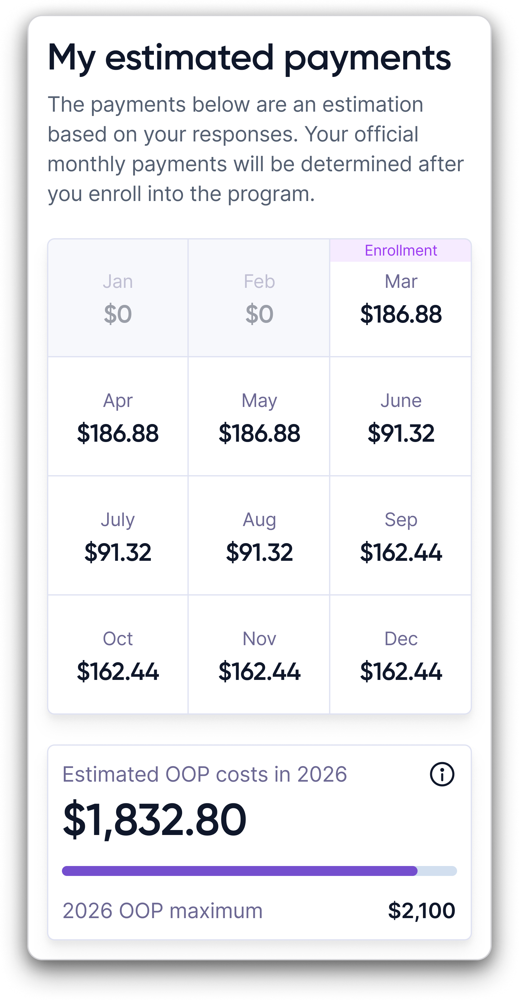
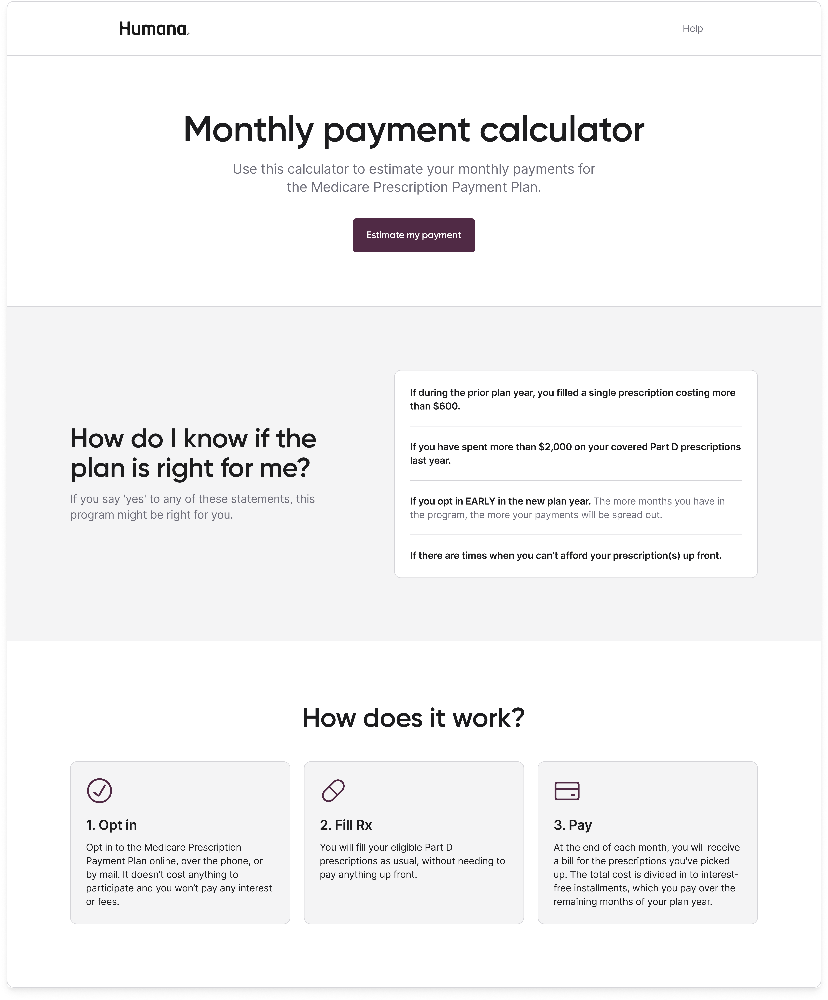
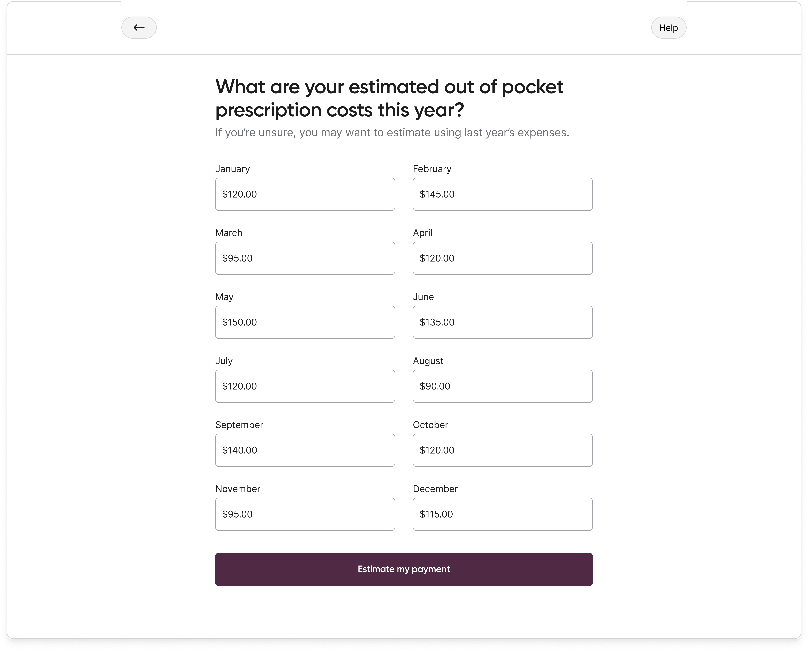
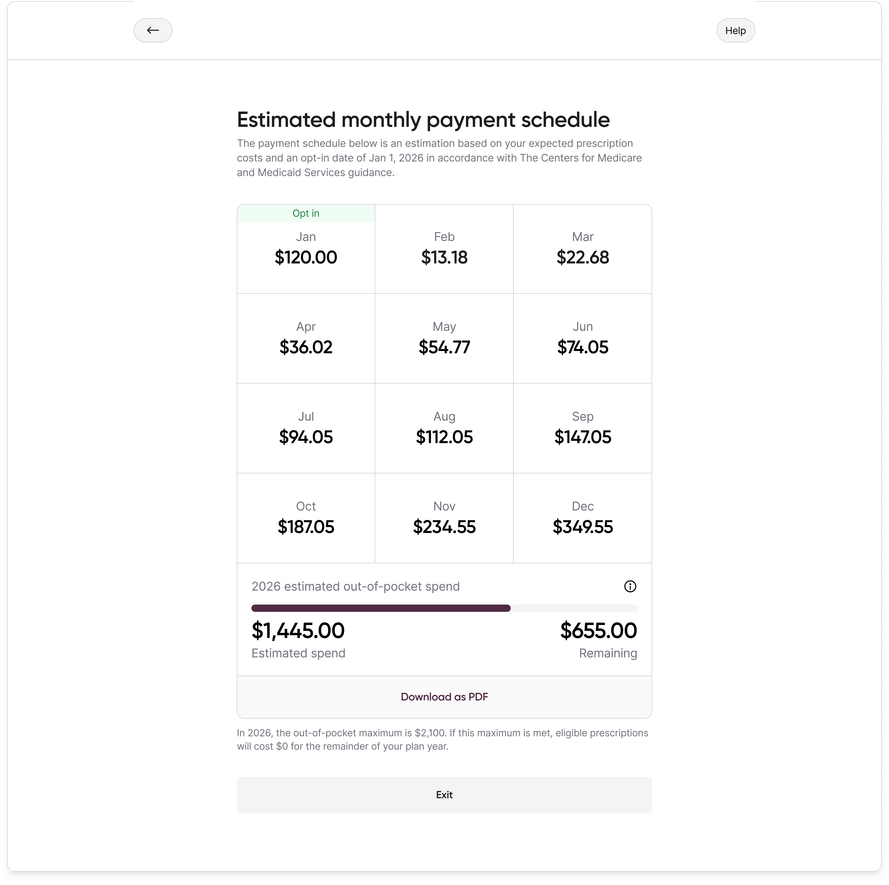
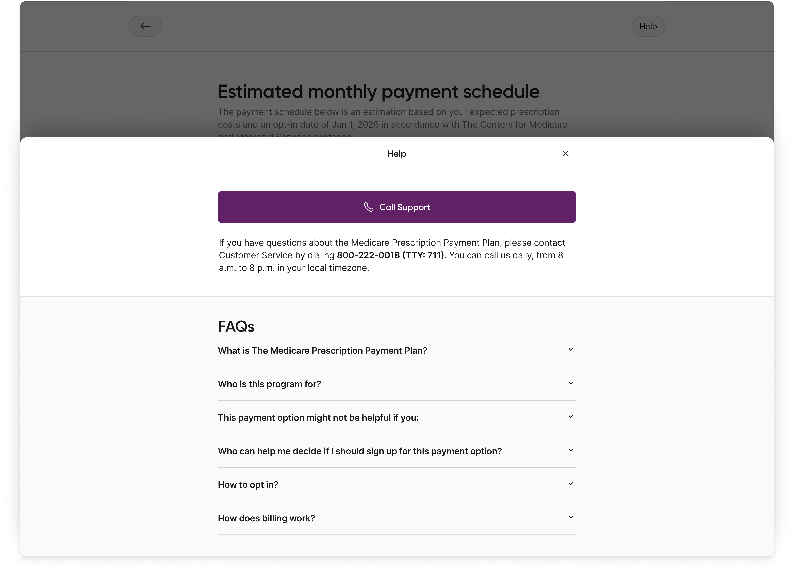

Monthly Payment Calculator for the Medicare Prescription Payment Plan
2024
I created a calculator that lets 20M+ Medicare Part D members estimate what they'll pay each month under the new federal Medicare Prescription Payment Plan.
Role
Founding Product Designer
Company
Paytient
Client
Humana
Express Scripts
Cigna
Shipped
October 2024
My role
I was the Founding Product Designer on this project to ship this work. I started alongside a Product Manager and Staff Engineer to build this product and the design system from the ground up in less than 10 months.
Context
The Medicare Prescription Payment Plan was a net-new federal program that allowed seniors on Part D to spread their out-of-pocket prescription costs over the calendar year instead of paying in full at the pharmacy.
Paytient stepped in to create a white-labeled product offering to support the end-to-end needs from this calculator tool to a member facing portal and CRM portal for customer reps to use when supporting members.
Problem
Before a member enrolled in the new program, they needed to know whether it would actually help them manage their prescription costs.
On top of that, the math was not intuitive. The benefit of the program depended on your prescription costs over the calendar year, how early you hit the $2,000 out-of-pocket maximum, and when you enrolled in the program. Without a way to see that clearly, seniors who would benefit were likely to dismiss the program, and seniors who would not benefit were likely to sign up and be confused when their monthly bills did not match their expectations.
Insight
The Medicare population we interviewed was budget-conscious regardless of income, with participants consistently practicing monthly budgeting and often comparing the program to the "level pay" plans they used for utility bills. They were not looking for a tool that sold them on the program. Instead, they were looking for a tool that respected their actual spending pattern and told them honestly what their monthly costs would be if they enrolled.
Explorations
I explored three directions before landing on the shipped design.
Direction 1

Direction 2

Direction 3

Final designs
The calendar grid won because it was the only direction that treated every month as equally important and showed the shape of the year at a glance. Other explorations misrepresented how the program actually works or were too vague for a population that wanted specificity.
In research, participants read the calendar grid as a calendar, which matched how they already thought about monthly budgeting. On tablets, the device most remote participants joined on, the full year fit in a single view without scrolling.




Result
The Medicare Prescription Payment Plan launched in October 2024 and is now available to 20M+ members (40% of the entire Medicare population) through Humana, Cigna, and Express Scripts.
The calculator launched as a tool for members evaluating enrollment. It became something broader. Caregivers used it to evaluate cost-saving options for the people they managed. Customer reps used it to quickly assess whether a member was a good fit before recommending the program.
The monthly payment projection is what made it work across all three. A single clear number gave every type of user the same thing: a fast, honest answer to whether the program was worth it.
20M+
Medicare members reached through Humana, Cigna, and other Part D sponsor partners, ~40% of the Medicare population.
$84M+
In managed billing.
"I think you guys have thought of everything. The size of the font is great. It is very clear what you would need to do. I wish websites were all like this. I think it looks amazing."